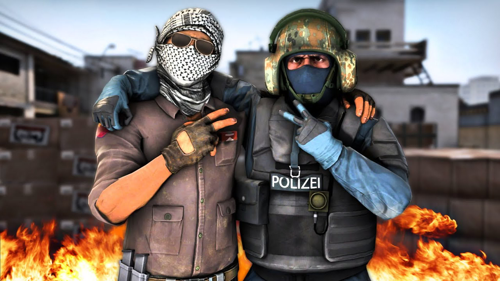

Компьютерные игры
Компьютерные игры - это интерактивные развлекательные программы, которые позволяют игрокам окунуться
в увлекательные виртуальные миры и стать героями своих собственных приключений. С течением времени компьютерные игры
стали неотъемлемой
частью современной культуры, объединяющей миллионы людей по всему миру в едином игровом сообществе. Компьютерные
игры разрабатываются
с использованием передовых технологий и творческого подхода, чтобы предоставить игрокам захватывающий игровой опыт,
включающий
в себя уникальные графику, звуковые эффекты и захватывающий сюжет.
Жанры игр
Существует множество жанров компьютерных игр, каждый из которых предлагает уникальный игровой опыт. Вот несколько
из них:
- Экшен: Этот жанр включает быстрые и интенсивные игры, в которых игроку приходится сражаться и противостоять
опасностям в реальном времени. Здесь можно найти шутеры от первого или третьего лица, файтинги и платформеры.
- Ролевые игры (RPG): RPG-игры предлагают глубокий и насыщенный игровой мир, где игроки могут развивать своего
персонажа, выполнять квесты, исследовать окружающую среду и принимать решения, влияющие на сюжет.
- Стратегии: Жанр стратегий предлагает игрокам возможность разрабатывать стратегии и тактики для достижения
победы. Это может быть как глобальное управление империей в 4X-стратегиях, так и управление отдельными юнитами в
стратегиях в реальном времени (RTS).
- Приключенческие игры: В этом жанре игроки отправляются в путешествие, решая головоломки, исследуя миры и следуя
захватывающим сюжетам. Здесь можно найти разнообразные игры, включая поиск предметов, графические квесты и
платформеры.
- Симуляторы: Симуляторы предлагают игрокам возможность погрузиться в реалистичные ситуации и имитировать
различные виды деятельности, будь то пилотирование самолета, управление городом или фермой, или даже жизнь
виртуального персонажа.
- Шутеры от третьего лица: Этот жанр предоставляет игрокам возможность управлять персонажем от третьего лица и
сражаться с противниками. Он включает в себя такие игры, как Gears of War, Max Payne и Uncharted.
Рекомендуемый список игр:

На мой взгляд, самыми увлекательными и захватывающими играми являются.
- Counter-Strike: Global Offensive
- Rust
- Only Up!
- Forts
- PUBG
- DayZ
- Metro 2033
- CarX Drift Racing Online
Конечно, вкусы в играх у каждого разные, и выбирать, во что играть, - это индивидуальное решение каждого игрока.
Позвольте мне предложить вам один магазин игр, где вы сможете найти то, что полностью соответствует вашим
предпочтениям и интересам.
Ссылка на магазин игр!